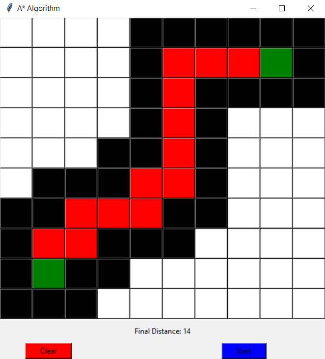
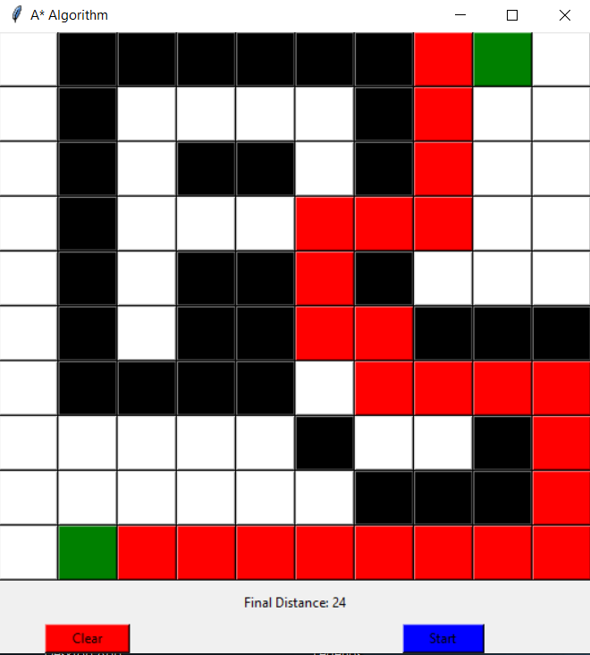

A-Star-Search
Implements the A* algorithm to find the shortest path between two points while only moving in cardinal directions (no diagonals)
Requirements:
- Python 3
- Tkinter and heapq packages installed
Basic Instructions
When you run main.py, you are greeted with this:

Left click to set endpoints (maximum of two)
Right click to add walls
Remove a selection by clicking it with the same click type you created it with.
After you're done creating your maze, click start to generate the shortest path.
Clear obviously clears all squares.
Examples

